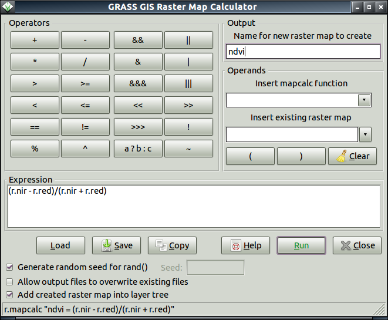
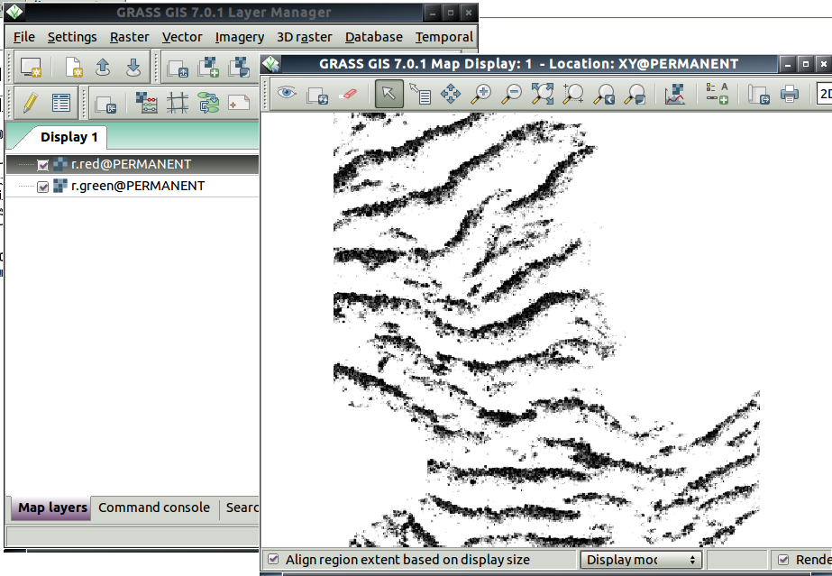
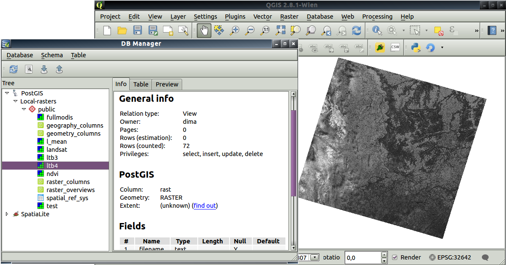
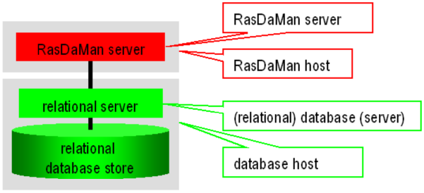

class: center, middle # Современные методы хранения и отображения данных ДЗЗ ### Колесов Дмитрий (kolesov.dm@gmail.com) ### NextGIS --- # Содержание ### 1. Область <<применимости>> ### 2. Обзор основных подходов и ПО ### 3. Выводы ??? Доклад -- обзор основных подходов к хранению и "доставке" пользователю данных ДЗЗ. Тема широкая, поэтому сначала я буду говорить о границах, ограничивающих тему. Затем собственно обзор, и в конце вывод. --- # О чем пойдет речь Будем рассматривать относительно небольшую компанию, использующую ГИС-технологии: * сервер; * большие (но в разумных пределах) объемы данных; * необходимость централизованного хранения данных и "доставки" их потребителю (аналитику, клиенту и т.п.); Понятие "Данные ДЗЗ" сузим до растровых данных. Будем рассматривать open-source решения. --- ПО, о котором идет речь в докладе, тестировались на следующих примерах: 1. Сцены Landsat (на ХМАО, все доступные L5, около 1000 растров). 2. Производный продукт от MCD15A2 (исходно - 8-ми дневные композиты километрового разрешения; произведена склейка в глобальное покрытие Земли, перепроецирование). ??? Относительно небольшая компания, которая по профилю связана с обработкой ДЗЗ: 1. Свой сервер для хранения данных (возможно обработки) 2. Что значит достаточно большие -- см. описание внизу слайда. Примеры. Гуру -- коментируйте и дополняйте тестировал: MCD15A2 - FPAR --- # Отображение данных Отображение понимается в широком смысле --- не только визуализация данных, но и способы их "доставки" пользователю. ## Основные способы: 1. Непосредственное чтение данных из хранилища и визуализация. 2. Протоколы доступа на базе SQL-запросов. 3. Унифицированные протоколы доступа к данным (OGC Web Services): 1. WMS (Web Map Service): протокол получения "отрисованной" версии данных. 2. WCS (Web Coverage Service): протокол получения собственно данных. ??? Рассказать о недостатках 1 и 2. Сказать, что 3 удобен стандартизацией --- # WCS 2.0 WCS 2.0 предоставляет новые возможности, например, поддержку n-D растровых данных, различные расширения. * Основные возможности (GetCapabilities, DescribeCoverage, GetCoverage). * Расширения: * Срезы (Range Subsetting): выборка данных по одному или более аттрибутам, например, выбор канала из мультиспектрального снимка. * Изменение разрешения растра. * Интерполяция: выбор метода интерполяции данных при изменении разрешения или перепроецировании. * WCPS (Web Coverage Processing Service): отдельный стандарт, но доступен как одно из расширений WCS. Описывает интерфейсы запросов к методам обработки растров (растровый калькулятор), избавляет от вычислений на стороне клиента. ??? Основное -- избавляет от расчетов на стороне клиента --- # Основные подходы к хранению и обработке; примеры ### 1. Растровая ГИС (данные хранятся в файловой системе) Пример: GRASS GIS ### 2. Хранение растров в реляционной БД Пример: PostgreSQL/PostGIS ### 3. Надстройка над реляционной БД Пример: Rasdaman ??? Классификаций можно придумать много, мне показалось удобно классифицировать по типу хранения: файловая система БД надстройка над БД --- Array DBMS (векторные? СУБД) --- # GRASS GIS https://grass.osgeo.org/ GRASS GIS изначально (1982 г.) создавалась как растровая ГИС, сейчас это ГИС общего назначения. В современной верссии (GRASS GIS 7): Поддерживается: * обработка 2-D и 3-D растровых данных (растровая алгебра, статистика, интерполяция, фильтры, разложение в ряды Фурье и др.); * анализ ДЗЗ (классификация на базе обучения с учителем и без учителя, радиометрическая коррекция, атмосферная коррекция и др.); * анализ векторных данных с поддержкой топологии (<<стандартный ГИС-набор>>, анализ лидарных данных, сетевой анализ и др.); * анализ пространственно-временных данных; --- # Особенности, плюсы и минусы Собственный формат хранения данных => два варианта работы: 1. Все хранится в GRASS, анализ производится там же. 2. Цикл обработки: 1. Импорт данных. 2. Обработка. 3. Экспорт результата. Минусы: 1. Собственный формат данных. 2. Нет конкуррентного доступа к данным. Плюсы: 1. Богатство аналитических возможностей. 2. Простота использования, настройки и администрирования. 3. Высокая вычислительная эффективность, низкие требования к объему памяти. 4. Простое создание приложений на базе GRASS. ??? Рассказать, как справляется с примерами растров. --- # Примеры Расчет NDVI для одной сцены landsat: NDVI = (NIR-RED)/(NIR+RED) * Консоль: ```bash r.mapcalc "ndvi = (r.nir - r.red)/(r.nir + r.red)" ``` * Графический интерфейс: .center[  ] --- # Отображение 1. Непосредственно из GRASS GIS. 2. GDAL. 3. Сервисы OGC на базе Geoserver, Mapserver или аналога. .center[  Графический интерфейс пользователя ] --- # Расширение PostGIS http://postgis.net/ PostGIS Raster начинался как отдельный подпроект, начиная с PostGIS 2.0 был интегрирован в основной код расширения. Часто используется название PostGIS WKT Raster. Поддерживается: * пространственный анализ и обработка растровых данных (например, растровая алгебра, аггрегационные фукнции, разбиение на тайлы и др.); * совместный анализ векторных и растровых данных (например, обрезка растров векторным объектом, зональная статистика внутри векторных объектов и др.); Для реализации пришлось ввести новый тип данных (растр), который хранится как бинарное поле реляционной БД. ### Унаследованные преимущества БД * Язык SQL в качестве языка обработки (не требует специфического ПО для общения с БД, относительно простая миграция). * Унаследованная от PostgreSQL экосистема (например, создание кластера из серверов, автоматическая репликация, распределение нагрузки и т.д.). ??? Slony-I – асинхронная (master to multiple slaves) репликация: http://slony.info/. Slony – система репликации реального времени, позволяющая организовать синхронизацию нескольких серверов PostgreSQL по сети. Slony использует триггеры PostgreSQL для привязки к событиям INSERT/DELETE/UPDATE и хранимые процедуры для выполнения действий. PgBouncer – менеджер соединений для PostgreSQL: https://developer.skype.com/SkypeGarage/DbProjects/PgBouncer. --- # Хранение данных в PostGIS .small[ .left-column[ Хранение непосредственно в БД * Пиксели хранятся в полях таблиц БД. * Можно хранить растр целиком или тайлы. * Данные преобразуются во внутренний формат PostGIS. Плюсы: 1. Создание резервных копий растров одновременно с резервной копией БД. 2. Поддержка транзакций == контроль за целостностью данных. 3. Быстрое чтение данных, аггрегация, векторизация. Минусы: 1. Большие объемы БД (== сложности с резервным копированием). 2. Нужны инструменты, которые умеют читать данные из PostGIS. ] .right-column[ Хранение в файловой системе * Данные хранятся в виде файлов на диске (Tiff, Jpeg, Png, ...). * В БД хранится только охват (extent) и метаданные растров (пути к файлам, геопривязка) Плюсы: 1. Сторонние приложения используют файлы напрямую. 2. Если данные не модифицируются, то достаточно сделать резервную копию каталога с растрами. Минусы: 1. Нет поддержки транзакций. 2. Нет контроля целостности. 3. Сложности с администрированием (настройки безопасности и т.п.). 4. Снижение скорости обработки по сравнению с хранением в БД. ] ] ??? Влияние размеров тайлов на производительность PostGIS https://duncanjg.wordpress.com/2013/09/21/effect-of-tile-size-and-data-storage-on-postgis-raster-query-times/ --- # Примеры Импорт файлов tif в таблицу landsat БД raster (тайлы, индекс и др): ```bash $ raster2pgsql -F -n "filename" -C -x -I -t 500x500 -d *.tif landsat > import.sql $ psql raster -f import.sql ``` Аггрегация: ```SQL CREATE TABLE l_mean AS SELECT ST_UNION(rast, 'MEAN') FROM landsat WHERE ST_Intersects(rast, ST_GeomFromText('LINESTRING(230486 887771, 230500 88772)', 32642)) ``` Расчет NDVI для одной сцены landsat: ```SQL CREATE TABLE ndvi AS SELECT ST_MapAlgebra(band3.rast, band4.rast, '([rast2] - [rast1])/([rast1] + [rast2])', '32BF', 'INTERSECTION') rast FROM band3, band4 WHERE ST_Intersects(band3.rast, band4.rast) ``` ??? Про особенности обработки растров разных размеров --- # Отображение 1. GDAL. 2. Сервисы OGC на базе Geoserver, Mapserver или аналога. 3. Прямой доступ из ГИС. .center[  Интерфейс подключения в БД PostgreSQL/PostGIS в QGIS ] --- # RasDaMan (RASter DAta MANager) http://www.rasdaman.org/ RasDaMan --- СУБД нацеленная на хранение и обработку больших массивов, в первую очередь, (гео)изображений, но при этом RasDaMan не ограничен двумя размерностями: он может обрабатывать также 1-D данные или пространственно-временные 4-D (и выше) данные. .center[  Обобщенная архитектура RasDaMan (RasDaMan: Installation and Administration Guide, http://www.rasdaman.org/browser/manuals_and_examples/manuals/doc-guides/inst-guide.pdf). ] Растры хранятся в реляционной БД (например, PostreSQL) в виде тайлов. Тайлы не обязаны быть равных размеров. Также в БД хранятся пространственные индексы. Все это хранится в виде BLOB полей. --- # Особенности, плюсы и минусы Поддерживается: 1. пространственный анализ и обработка растровых данных (например, растровая алгебра, аггрегационные фукнции, разбиение на тайлы и др.); 2. анализ растров очень больших размеров, превышающих размеры дискового пространства (hierarchical storage management); 3. WCS 2.0. Не поддерживается: 1. совместный анализ с векторными данными; 2. отличные от Unix-подобных операционные системы. Особенности: 1. Надстройка над БД => собственная клиент-серверная архитектура (свой менеджер и пул запросов). 2. Свой SQL-подобный язык запросов. 3. Нет своей системы визуализации данных, передача данных клиенту производится на базе сервисов OGC (из коробки). ??? Про простоту настройки для высокопроизводителных систем --- # Примеры Создание коллекции (аналог таблицы в БД) mod_2003_12_27 и импорт в нее файла 2003.12.27.tif: ```bash rasql -q 'insert into mod_2003_12_27 values decode($1)' \ -f 2003.12.27.tif --user user --passwd password ``` Расчет NDVI с созданием новой коллекции: ```bash rasql -q "select (nir - red)/(nir + red) into ndvi from nir, red" \ --user username --passwd password ``` Работа с масками и значениями ячеек: ```bash rasql -q \ "select e from elev as e, Masks as m where some_cells(e > 250 and m)" \ --user username --passwd password ``` ??? --- # Заключение ### GRASS GIS * Рабочая станция исследователя, аналитика (сложная логика, разведочный анализ). * Отдельное приложение. --- ### PostGIS * Сервер для обработки большого числа растров малых и средних размеров. * Необходимость одновременного анализа растровых и векторных данных. --- ### RasDaMan * Сервер для обработки больших растров.